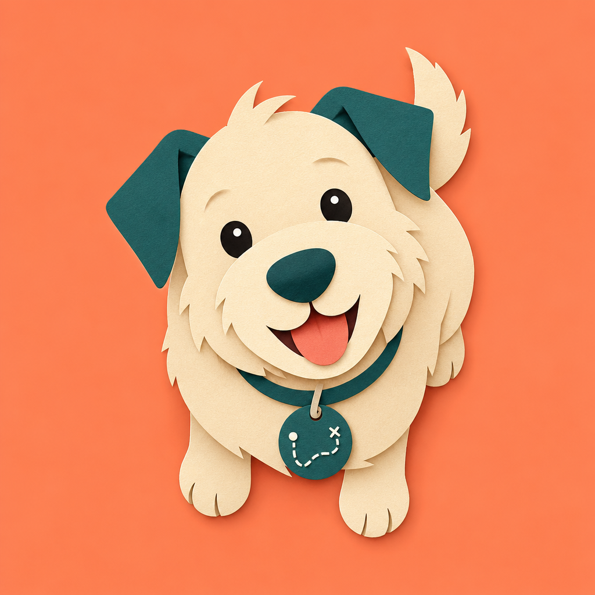

The living atlas of your dog's life.
Coming to the App StoreGround you've covered, fading over seven days.
Pawprints notices a walk starting and asks — one tap to confirm. Your route draws live, and a Live Activity keeps it on your Lock Screen.
Explored ground fills in as you walk it, then fades across seven days. Walk somewhere again and it comes back to full strength.
Photos taken on a walk pin to the exact spot on the route. Tap a cluster to open the moment back up.
Log feeding, medication and weight, and see what's due at a glance. Never gated — care is free, always.
Your atlas syncs through your own iCloud account. No ads or cross-app tracking. Subscription analytics are explained in our privacy policy.
No leaderboards, no guilt notifications, no completion score. Miss a week and nothing scolds you — the map just quietly fades.
Free covers one dog and the whole archive — walks, map, photos, care — with no time limit and no expiry. Plus adds a few conveniences on top.
$1.49 weekly · $4.99 monthly · $29.99 yearly. Cancel any time in your Apple Account settings. Your walks, map, photos and care records are never locked behind Plus — if a subscription lapses, your archive stays readable.
Pawprints is made by one person. If something's confusing, broken, missing, or you just want to say hello, I'd like to hear about it.
I read everything that comes through.
Pawprints needs Location set to "While Using the App" and Motion access. Check Settings › Pawprints on your iPhone.
Your atlas restores from iCloud. Make sure you're signed into the same Apple Account and give it a few minutes to finish syncing.
iCloud sync isn't instant. If a change still hasn't appeared after a few minutes with both devices online, write in and tell me.
Subscriptions are managed by Apple, not by me. Open Settings › your name › Subscriptions on your iPhone. For refunds, use reportaproblem.apple.com.